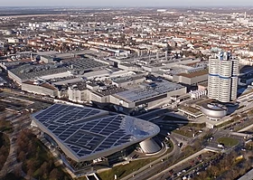

Bayerische Motoren Werke AG, abbreviated as BMW , is a German multinational manufacturer of luxury vehicles and motorcycles headquartered in Munich, Bavaria. The corporation was founded in 1916 as a manufacturer of aircraft engines, which it produced from 1917 until 1918 and again from 1933 to 1945.
Automobiles are marketed under the brands BMW, Mini and Rolls-Royce, and motorcycles are marketed under the brand BMW Motorrad. In 2017, BMW was the world's fourteenth-largest producer of motor vehicles, with 2,279,503 vehicles produced.[2] The company has significant motor-sport history, especially in touring cars, sports cars, and the Isle of Man TT. BMW is headquartered in Munich and produces motor vehicles in Germany, Brazil , China, India, Mexico, the Netherlands, South Africa, the United Kingdom, and the United States. The Quandt family is a long-term shareholder of the company (with the remaining shares owned by public float), following investments by the brothers Herbert and Harald Quandt in 1959 which saved the company from bankruptcy.
Otto Flugmaschinenfabrik was founded in 1910 by Gustav Otto in Bavaria. The firm was reorganized on 7 March 1916 into Bayerische Flugzeugwerke AG. This company was then renamed to Bayerische Motoren Werke (BMW) in 1922. However the name BMW dates back to 1913, when the original company to use the name was founded by Karl Rapp (initially as Rapp Motorenwerke GmbH). The name and Rapp Motorenwerke's engine-production assets were transferred to Bayerische Flugzeugwerke in 1922, who adopted the name the same year. BMW's first product was a straight-six aircraft engine called the BMW IIIa, designed in the spring of 1917 by engineer Max Friz. Following the end of World War I, BMW remained in business by producing motorcycle engines, farm equipment, household items and railway brakes. The company produced its first motorcycle, the BMW R 32 in 1923.